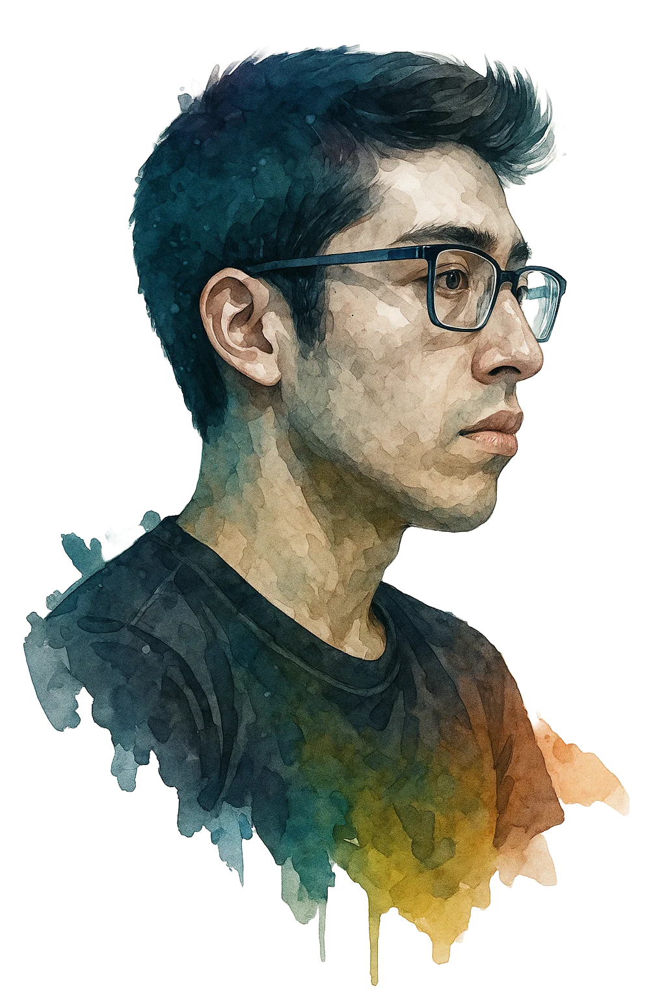

Bienvenid@ a
MI PORTAFOLIO DIGITAL
Estudio Ingeniería de Sistemas en la UNCP y me apasiona transformar ideas en soluciones digitales. Disfruto enfrentar nuevos retos, aprender de cada experiencia y construir proyectos que aporten valor real. Creo firmemente que la tecnología puede ser un puente para mejorar la vida de las personas, y quiero ser parte de ese cambio.